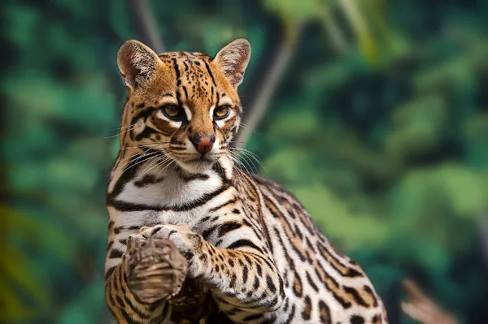
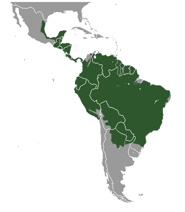

Jaguatirica
Nome científico: (Leopardus pardalis, Linnaeus 1758)
Nome comum: Jaguatirica.
Classificação biológica:
Domínio: Eukaryota.
Reino: Animalia.
Filo: Chordata.
Classe: Mammalia.
Ordem: Carnivora.
Família: Felidae.
Gênero: Leopardus.
Espécie: Leopardus pardalis.
Nutrição: Carnívoro.
Hábitos alimentares: Alimenta-se de pequenos mamíferos, aves, répteis e anfíbios. Também pode consumir peixes e alguns invertebrados.
Morfologia do corpo: Possui pelagem curta e densa, com fundo amarelo-dourado e manchas pretas distribuídas em padrões irregulares. Mede entre 70 cm e 1 metro de comprimento, com uma cauda de 25 a 45 cm. Pesa entre 7 e 15 kg.
Comportamento: É um animal solitário e territorialista, de hábitos noturnos e crepusculares. Exímio caçador, utiliza emboscadas para capturar suas presas.
Principais Presas: Pequenos mamíferos, aves, répteis, anfíbios e peixes.
Principais Predadores: Onças-pintadas, grandes cobras e humanos (caça ilegal e destruição do habitat).
Locais habitados
Distribuição: Presente em todos os biomas brasileiros.
Habitat: Habita florestas tropicais, cerrados, caatingas e até áreas de manguezal. Prefere locais com vegetação densa e próximas a corpos d'água.
Reprodução: A gestação dura cerca de 70 a 80 dias, dando origem a 1 ou 2 filhotes, que permanecem com a mãe por até 2 anos.